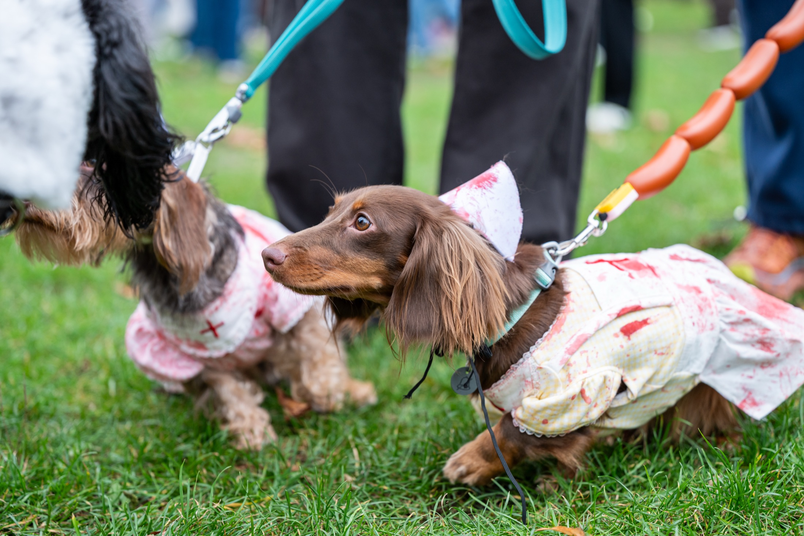
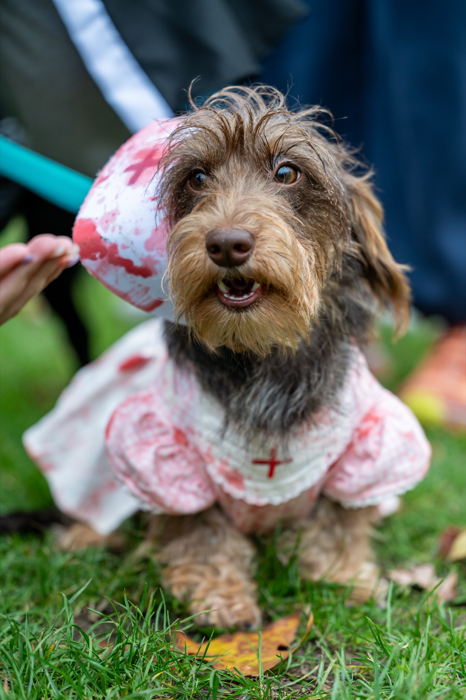
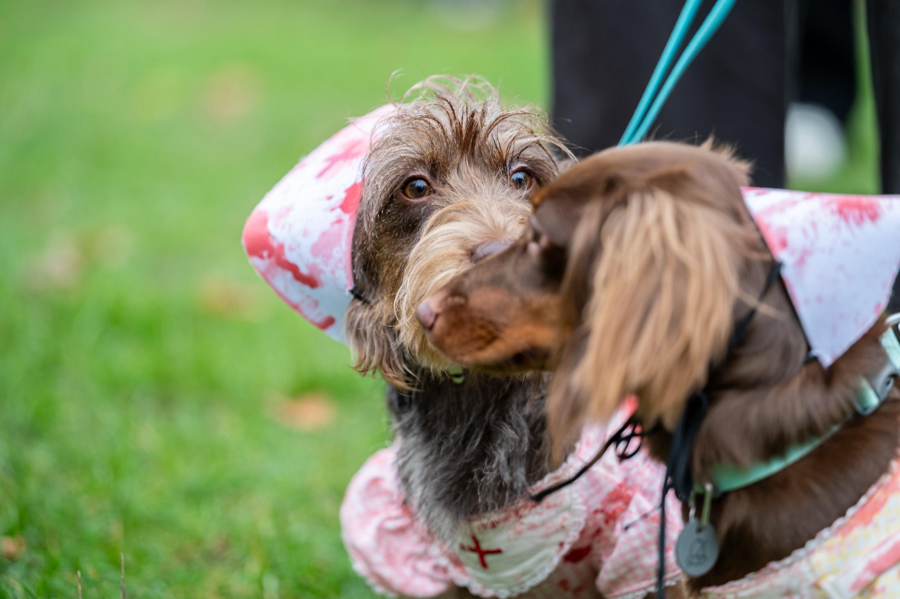
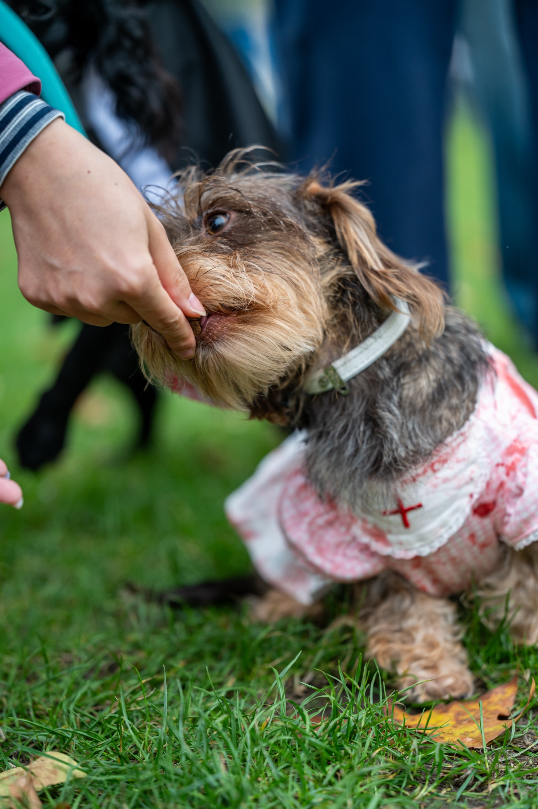

Personal series / London, 2026
A day in
Hyde Park.
A small study in companionship and character. Two dressed-up dogs meet the afternoon at their own pace, with all the curious pauses and passing moments that come with it.





Project Personal series
Location Hyde Park, London
Photography Leo Wang
Next story / Faces in passing ↗